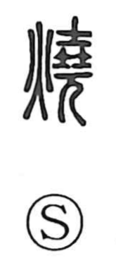

焼

Kun: yaku, yakeru | On: sho
to burn ・ to bake ・ to roast ・ to cook
Explanation
Originally written 燒, this is a phono-semantic character: the fire element 火 gives the meaning, while 堯 serves as the sound element, as in characters like 繞. Shirakawa interprets 堯 as depicting clay vessels (土) stacked within a cooking stove or kiln (焼竈). With the addition of fire, the graph shows those vessels being fired. From that concrete scene of firing pottery, the sense broadened to applying flame in general—“to burn”—and by extension to culinary heating such as baking and cooking.